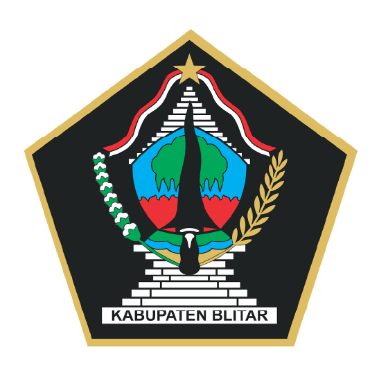
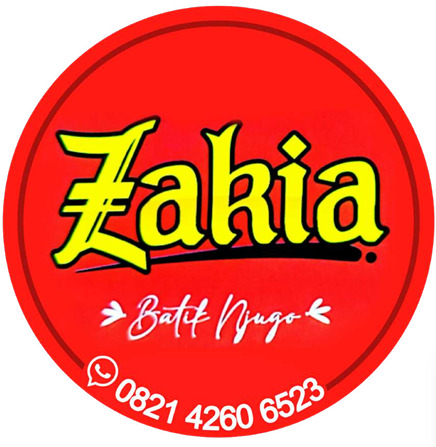
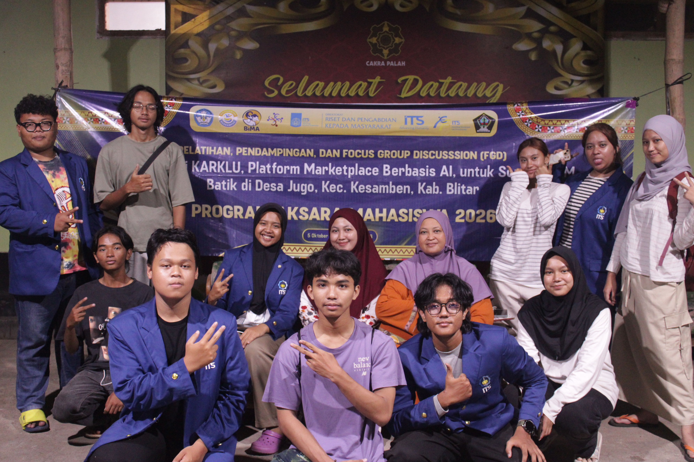
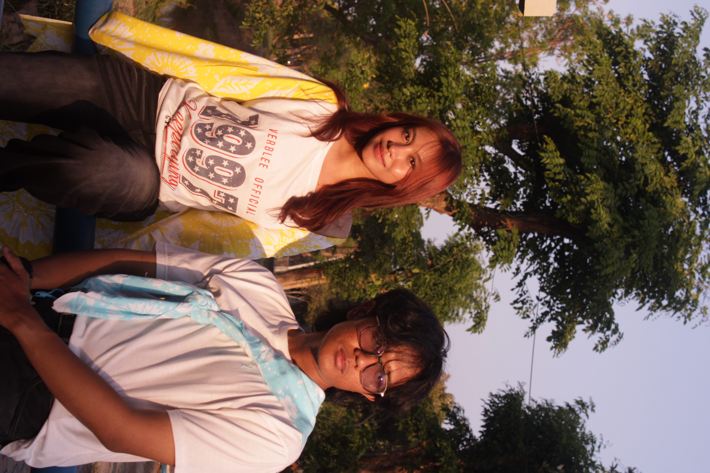

Pelatihan Kreasi Kain Shibori dan Produk Fungsional Berbasis Desain Inklusif kolaborasi pengabdian masyarakat mahasiswa Institut Teknologi Sepuluh Nopember (ITS) bersama perajin lokal Batik Zakia untuk melestarikan filosofi wastra dan memperluas daya saing ekonomi kreatif desa.

AKSARA (Aksi Nyata Mahasiswa untuk Masyarakat) merupakan program pengabdian kepada masyarakat di bawah naungan DRPM Institut Teknologi Sepuluh Nopember (ITS) bersama mitra Batik Zakia di Desa Jugo, Kecamatan Kesamben, Kabupaten Blitar. Geser kartu di bawah untuk menelusuri seluruh rangkaian kegiatan kami.

Berakar di Desa Jugo, Kecamatan Kesamben, Kabupaten Blitar, Batik Zakia hadir sebagai ruang pelestarian warisan budaya sekaligus penggerak kemandirian ekonomi perajin lokal.
Setiap helai kain Batik Zakia lahir dari ketekunan tangan perajin yang menerjemahkan sejarah, flora sakral, dan petuah leluhur ke dalam goresan malam mulai dari motif utama Dewandaru yang melambangkan keberkahan, Cakra Palah yang terinspirasi dari kemegahan Candi Penataran, hingga kisah kepahlawanan Sinabdo dan tradisi Sajugo.